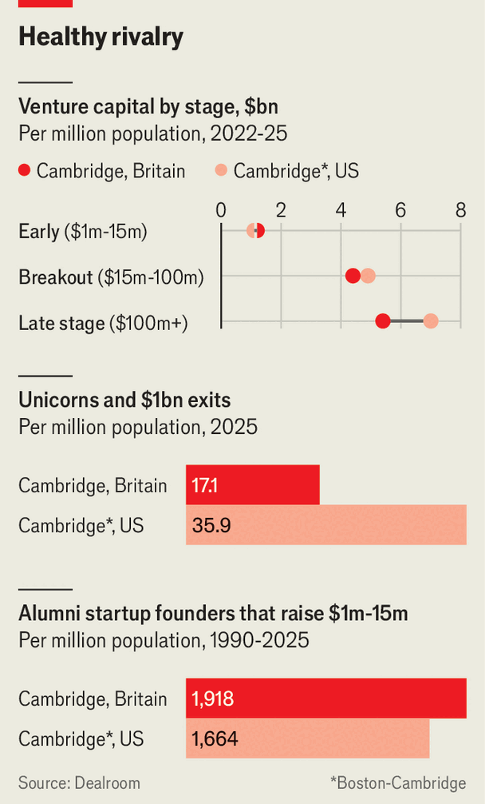
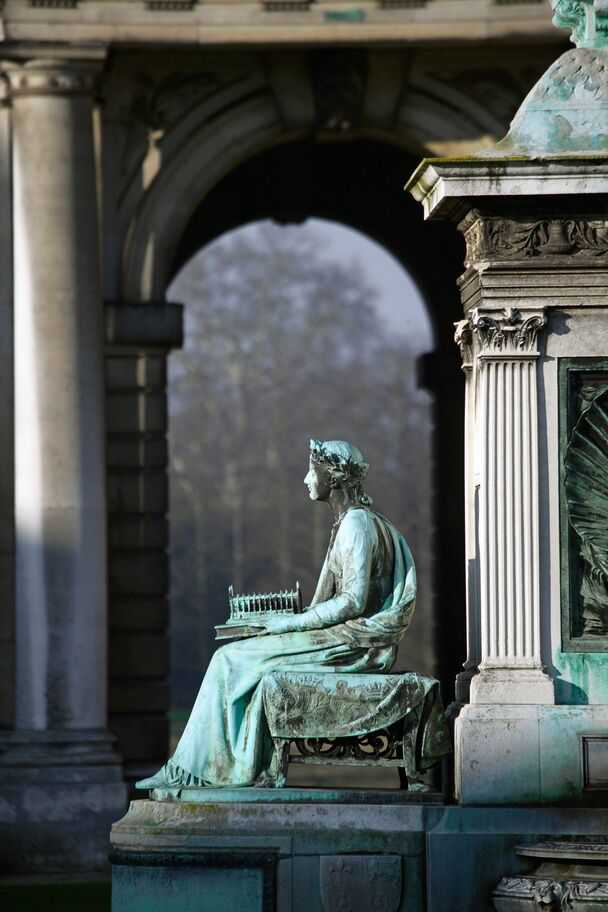

Why Cambridge and Cambridge need each other
Two of the world’s most innovative cities have the same name and completely opposite problems. That is leading to closer collaboration
July 2nd 2026

CAMBRIDGE, A medieval city 80km (50 miles) north of London, is steeped in innovation. Its university shaped John Milton, Charles Darwin and Stephen Hawking. A plaque outside the Eagle pub marks where Francis Crick and James Watson announced the discovery of the double-helix structure of DNA. It is the birthplace of in vitro fertilisation, the designs that sit in most phones and tablets, and the first humanised monoclonal antibody, a technology used to develop three of the world’s five top-selling drugs. Today it is a global hub for life sciences, semiconductors and artificial intelligence.
It is no coincidence that its successes are echoed by its American namesake: Cambridge, Massachusetts. Many involved in founding Harvard College, its famous seat of learning and America’s oldest university, were Cambridge alumni. In 1638 the colonists renamed the surrounding settlement, founded as New Towne, to honour their alma mater (and that of the college’s benefactor, John Harvard).
Today, the American Cambridge has not so much imitated its British cousin as surpassed it. Harvard mushes into the Massachusetts Institute of Technology (MIT), another of the world’s best universities. On a curated “innovation trail”, which begins across the Charles river in Boston, various stops celebrate Biogen (one of the area’s earliest biotech companies), Android (an operating system that powers billions of smartphones) and Kendall Square, the biotech hub dubbed the world’s “most innovative square mile”.
The two Cambridges are not exactly rivals. They are mirror images: on the surface almost identical, but with opposite problems. Rather than exploiting each other’s weaknesses, over the past years they have grown to work much more closely together to offset them. The relationship is unequal, but increasingly conjoined.
Both are among the world’s most efficient innovation engines, driven primarily by their world-class academic research. Each produces far more alumni founders per person than Silicon Valley (who, even more than the tech bros they seem to resent, talk constantly of changing the world, and curing cancer). Nobel prize-winners regularly bump into one another in Kendall Square and on King’s Parade across the pond.

After the Bay Area, the Cambridges are the world’s densest innovation clusters per person, though which comes first depends on what you count. The World Intellectual Property Organisation (WIPO) produces a Global Innovation Index, which measures density by a cluster’s global share of patent awards, scientific citations and venture-capital (or VC) deals. It ranks Britain’s Cambridge ahead of Boston-Cambridge, in second and third respectively. Dealroom, a data provider that ranks the ecosystems on enterprise value and the number of unicorns (private firms worth more than $1bn), reverses the order.
Britain’s Cambridge may have the edge in research, the rankings suggest, producing more scientific publications and filing more patents relative to the size of its population than the bigger Boston-Cambridge cluster does. Boston, however, commercialises it better. (WIPO reckons that the world’s most innovative cluster overall is around the Chinese city of Shenzhen.)
The American Cambridge is the more advanced ecosystem mostly because of its scale. WIPO estimates the Boston-Cambridge cluster is home to around 4.3m people, compared with only 500,000 in greater Cambridge (both Cambridges have similar numbers of inhabitants, but only one happens to be next to a metropolis). Kendall Square is one subway stop along from two of the world’s best hospitals. Companies are only a train-ride away from the world’s biggest stockmarkets in New York.
Massachusetts has built on these advantages. An infusion of capital into life sciences has funded upgrades to infrastructure such as roads and sewage systems. Success and tax incentives have helped attract VC funds and pharmaceutical firms to buy biotech startups’ drugs. “It’s easier to count the pharma companies that don’t have a presence in Cambridge,” says Tim Clackson, a British biopharma executive who has lived stateside for decades. Companies tend to stay and scale, such as Biogen and Moderna, a biotech firm best known for its covid-19 vaccine.
Contrast that with the British Cambridge. Two of Britain’s three biggest firms by market cap—Arm, a microchip designer, and AstraZeneca, a pharmaceutical giant—have their headquarters there. AstraZeneca had threatened to leave Britain, but in April announced a £300m ($400m) investment in the country. Yet the “real Cambridge”, as Hawking referred to it, remains constrained by its medieval skin. Cows still graze in the city centre. The place struggles to provide enough housing, water and transport for its growing population. In recent years, a shortage of facilities has forced science startups to use office space as makeshift labs.
Hemmed in by its infrastructure, Cambridge is also starved of capital. Though it raises more early-stage VC relative to the size of its population than Boston-Cambridge does, a dearth of domestic capital later on means that it falls behind as firms grow. There are “fewer investors, fewer people who are paying attention”, says Krishna Yeshwant of GV, Google’s venture arm, meaning that GV can come in and “not have quite as much competition”. Allan Bradley, a serial entrepreneur and founder of T-Therapeutics, puts it differently. “American VCs are looking for an 80% discount in the UK,” he grumbles.

Whereas Britain’s Cambridge is starved of capital and space, its American twin has been distorted by excess. During the covid-19 pandemic, companies began to have initial public offerings “way too early… often without proof of concept”, explains Kendalle Burlin O’Connell of MassBio, a trade body. Between 2020 and 2024, the amount of commercial lab space in Greater Boston almost doubled, from 35m to 63m square feet. Rents, overhead costs and salary expectations all soared.
When the downturn inevitably came, the city was left with indigestion. In the fourth quarter of 2025, 28% of lab space was vacant in Boston-Cambridge. As the cranes halted, so did the funding. The number of biotech initial public offerings in Massachusetts fell from 15-25 a year to one or two, says Ms Burlin O’Connell. Investors became more risk-averse, giving larger amounts to fewer firms, but starving earlier-stage companies of capital—the reverse of the British problem.
Increasingly, the two Cambridges’ strengths and weaknesses seem to complement one another. The two have always collaborated: an annual conference on “Accelerating Bio-Innovation” alternates between the University of Cambridge and MIT. A growing trend, notes Mike Anstey of Cambridge Innovation Capital, a vc firm, is for British biotech firms to be in both. Bicycle Therapeutics, which listed on the Nasdaq in 2019, is one of dozens that have opened an office in Massachusetts, while keeping its core research and development at home. The former offers access to America’s larger pools of capital and talent, clinical-trial capacity and its domestic market; the latter, world-class talent on the cheap. Deep-tech startups often do the same, notes Mr Anstey, but with San Francisco instead.

Capital is flowing in the opposite direction. In the American Cambridge, VC funding has continued to fall ever since it peaked in 2021. In the British one, it has risen continually since 2022. American investors now provide 19% of all VC received by companies based there, up from 8% in 2015. The same is true in property. Tim Schoen, the chief executive of BioMed Realty, one of the largest owners of lab office properties in both Cambridges, says that his firm is in the British city mostly because it is a “centre of excellence” (it also happens to be a hedge against the Kendall Square downturn). “The markets are complementary to each other,” he says.
The British city wants to learn from its namesake as well as join up with it. Innovate Cambridge, a boosterish coalition, plans an innovation hub modelled on a biotech incubator in the American Cambridge, LabCentral. A partnership of universities and health providers is working on speeding up clinical trials. The city is improving its infrastructure. The squeeze on lab space is easing, to be helped further by a £3bn expansion of its science park, already Britain’s largest. The University of Cambridge recently acquired a new supercomputer, and is trying to commercialise research in quantum computing.
Scale will come by joining up the points of the golden triangle of Cambridge, Oxford and London, England’s three most innovative cities, all in the south-east (to the delight of Andy Burnham, Britain’s presumed next prime minister, Cambridge is also working more closely with Manchester). A project to connect Oxford and Cambridge with a railway may finally steam ahead; a new station opened in Cambridge on June 28th. Pension reforms may help Britain deepen its capital markets. America’s slashing of public research funding, which has hurt Boston-Cambridge, may help Britain lure across talent.
In the cafés around Kendall Square, customers worry less about the other Cambridge and more about competition from China. Last year, Chinese firms ran nearly a third of the world’s clinical trials, up from only 6% a decade before. After America, the country is now the second-biggest source of new innovative drugs. The geography of innovation is shifting. In future, fewer breakthroughs may come in the Cambridges, and more in Shenzhen. That may draw the Cambridges closer still.■
For more expert analysis of the biggest stories in Britain, sign up to Blighty, our weekly subscriber-only newsletter.